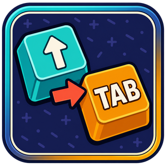

01
MAIN BINDING
Your key, your output.
Choose any trigger and output from Geode's key picker. Changes apply immediately — no game restart needed.

KEY REMAPPER GEODE MOD Download v1.9.2Turn one key press into another — then automate actions at a percentage, on death, or at the finish line.
The original key keeps working. Key Remapper adds a matching system-level key press with the same down, hold, and release behavior.
Choose any trigger and output from Geode's key picker. Changes apply immediately — no game restart needed.
Control gameplay, editor, and menu activity separately.
Move the indicator anywhere or hide it for a clean HUD.
Fire separate keys exactly when your level needs them. Every action is optional and follows the main enable switch.
Choose any point from 1% to 100%. The action fires once and rearms on the next attempt.
Send a key only when a death happens at or after your chosen minimum progress.
Automatically tap the selected key once when the level completion screen appears.
Use the complete Geode settings panel, or control common options inside Eclipse and QOLMod when either one is installed.
Grab the latest .geode package from GitHub.
Move the file into your Geometry Dash geode/mods folder.
Open the mod settings, choose a trigger and output, then play.
Configurable remapping, automatic actions, a movable indicator, and optional Eclipse and QOLMod integrations.
Join the Discord for feedback, bug reports, and future mod updates.
Join Discord